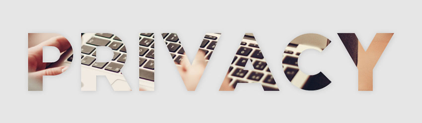
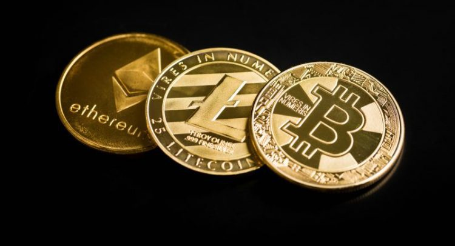
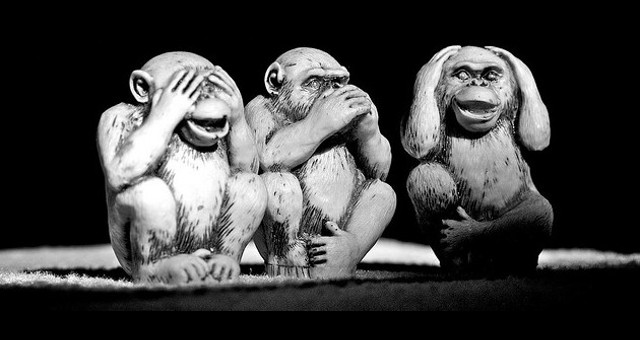

What is Privacy and Why is It Important?

Let us raise a very tricky matter of privacy.
Is privacy good or evil? Does any person have a right to be privacy-protected? Can we apply common statement "If you are doing nothing wrong, you have nothing to hide" to our lives?
Right now, society is desperately looking for the answers to these particular questions, but it seems that government has solid position regarding them, too. Lack of privacy in our lives seems to be relatively farfetched problem for the majority of people, but eventually debates could turn into a serious confrontation. A careful eye would notice that for now there is little resistance.
Look around thoroughly - we are living in the world where surveillance cameras are all around us, banks know exactly how much money we have and how exactly we are spending it, search engines know what exactly we are looking for and what exactly we like, and, of course, you should keep in mind that messages we send via social networks and messaging apps could be easily accessed by authorities.
The year is 2015. Edward Snowden has already disclosed sensitive information concerning NSA surveillance techniques, and it does not look like the US citizens have a variety of rights when it comes down to privacy. His story has inspired some and terrified others.
We voluntarily handed the government powers to enact all those laws as they told us that these were precautionary retaliations and it was done for the national safety and the safety of ourselves.
Could it be that sometimes Government does not keep peoples' best interests at heart, being more concerned about its own footing?
Privacy or Security?
Choosing between privacy and security is a slippery slope, because there is no right choice. We should not be faced this decision, but the impression is that we are forced to. Predictably, people are choosing security. But not all of them.

There are wonderful technologies in our ever-changing world. Diligent people created them in order to protect each and everyone's privacy. Cryptocurrencies are definitely a part of those technologies, serving the great cause and aiming to change banking industry by making it transparent and receptive
Thank you, Bitcoin
Bitcoin is the first cryptocurrency. While creating Bitcoin, Satoshi Nakamoto had a noble cause in mind - bring financial system to every person in the world and make this financial system as free and as decentralized as possible. Bitcoin could also provide basic privacy and overwhelming transparency simultaneously, combining the beauty of Blockchain technology with solid encryption.
No wonder it regrettably became popular among deep web users and individuals associated with illegal activities.

Despite worldwide acknowledgment and great interest of CEOs in Bitcoin and Blockchain products, Bitcoin is still fighting against its unwanted past.
Thank you, Bitcoin, for wide investment opportunities you have brought and all the hard work you have put to win the reputation dispute. You are doing a splendid job and providing other cryptocurrencies with a standing chance, since most people associate cryptocurrencies with Bitcoin.
Needless to say, Bitcoin has drawn intent governmental attention, which is the best signal in the current political and business world. Certainly, Government is only testing the ground with cryptocurrencies, rolling out diversity of regulations, but this is a sign that cryptocurrencies have become a substantial player on the world financial arena. Global presence is impossible without regulations, but we can hope that governments all over the world will work out a License, which would be more tolerant than NY BitLicense. Swiss Government, for example, worked out much more subtle and elegant regulations, which do not interfere with the privacy of cryptocurrency users without genuinely good reason. Swiss citizens enjoy all the benefits of having a perfectly private bank account in Switzerland without actually getting one. Swiss Government is particularly famous for its respect for one's privacy and it is good to know that this respect spreads out for cryptocommunity as well.
Although Bitcoin has a bright future ahead, being on its way to mass adoption, its leaders never claimed that Bitcoin technology will protect privacy and provide anonymity to its users. Fortuitously there are cryptocurrencies, which put privacy in the first place; CryptoNote technology probably went further than all up this path.
There is a solution, and we can be absolutely confident about it. The most important thing at this moment is to make our big great world, which flinches as soon as "terrorism" word is in the air, understand that privacy is a cure, not a curse.
Privacy is supposed to be a basic human right that must be guaranteed to any person, just as freedoms of speech, thought and religion are.
Privacy or Safety?
Here comes the most important question - why does privacy matter? The answer happens to be very simple, but also deep and elaborate.
First of all, privacy is about freedom.
Privacy stands in the same line with freedoms of thought and speech. They could be siblings.
If government decides to esteem privacy, it also provides people with the basic right of not being forced to testify against yourself and your family members. Another crucial point is that Government could provide to individual an opportunity to change and have a second chance, if needed. For example, in many countries sensitive facts are often could be expunged from one's personal record by local authorities, if person has shown repentance, atonement and good behavior. When unwanted and irrelevant information accidentally comes to light, the public judgment could be - and it usually is - fierce, impulsive and hasty, peoples' lives could be broken within a second just as a side-effect.
One of the hallmarks of freedom is having autonomy and control over our lives, and we cannot have that if so many important decisions about us are being made in secret without our awareness or participation.
Second, privacy is about respect for the individual. By providing privacy rights to the citizens, Government shows that a person is not just another brick in the wall, that individual does matter.
Freedom of social and political activities could not naturally exist and prevail without respect for individual privacy. Living our social life we know exactly what is polite and what is not, the same boundaries should be applied in the relationships between Government and its citizens. Intruding one's privacy is neither polite nor respectable. If Government does not have a compelling reason to brush aside an individual's desire of privacy, in a sense it is saying, "I'm concerned with my interests, but I don't consider yours being worthy."
The third and the most important thing about privacy is trust. We trust government by choosing it in the privacy of the empty vote-box; it is only natural to expect the Government to trust us back.
If the trust is breached, here starts the vicious circle of suspicion and corruption between both parties. Disregard of privacy and confidentiality is the unmatchable exterminator of trust.
When it comes to debates, people usually oppose privacy right with safety or security right. Fellow citizens are used to feel uncomfortable if there is a technology, which keeps one from being listened in or from being exposed in any matter.
Society does not tend to give someone a benefit of doubt and it has plenty of legit reasons to think this way, as it is probably true - if technology could contribute to the immoral activities, it probably will contribute.
But the key to all these gloomy thoughts is fear - it is embarrassing, but we happen to be afraid all the time. Fear is one of the strongest human emotions. Politicians sometimes are stepping over the line in exploiting this strong and destructive emotion, which proved to be one of the most effective ways to make nation give up some of their rights for the sake of safety, which is not even there.
Society should not feel guilty about its privacy being respected, because it does not mean people are choosing privacy instead of security. People can choose both.
Unfortunately, Government cannot ensure 100% security, and it will never be able to do so. No one will. Government should do every thing possible on its way to this ultimate ambition without listening to every conversation in the world, without reading every message in Facebook and without controlling every penny of its citizens' money.
As Benjamin Franklin once said, "Those who would give up essential Liberty, to purchase a little temporary Safety, deserve neither Liberty nor Safety."
Privacy Matters
It is ironic that people in general are amazingly courageous on the everyday basis.
Every day we walk on the streets where we could be hit by a car, robbed, beaten up or even killed by a little brain aneurism. We got used to being in danger all the time, and probability of getting hurt on a very usual working day is thousand times higher compared to the likelihood of the terrorist attack. But the fear of terrorism and breaches in national security is tremendous among the good everyday-brave people.

Huge resources are already spent on military and defense technologies instead of, for example, opening new schools or making medical care more affordable. And it is fine, as it is supposed to be like that, because we do live in this dangerous twisted world and obviously we should encourage every effort towards keeping our country safe.
It is also high time we started to live for ourselves a little bit and expect the Government to understand and encourage this choice. Everyone should have basic privacy rights of transferring the money anonymously or writing messages confidentially. You have a choice not to tell the Big Brother how much money you have, where, and how exactly you are storing it and whom you are giving it. There should not be a Big Brother at all, let us hope we are not living in Orwell world.
Privacy must be respected as much and as vigilantly as religion and freedom of speech, because - it is so simple! - privacy matters. Surely Government could afford to be a little xenophobic at first, but, one day, a new generation of politicians will govern the State, and they will trust people just a tiny bit more - this should be enough.
Cryptocurrencies and other privacy-protection technologies are perfectly able to make the world a better place by giving people new essential rights and freedoms. It is an endless source of new technologies and everlasting inspiration.
The world is an interconnected place now, so it requires global resources, accessible by the whole international community. We - and our Governments - have a solid chance to build a fair financial system right now, so, probably, instead of taking your money to the bank you could buy some Bitcoins, Ethers, NXTs or Bitcoins nova, being sure that this is definitely for the greater good and the greater and more private world.
Privacy exists for everybody, for people like me, like you, dear reader, and like your neighbor or your teenage child.
There is absolutely nothing wrong about privacy. Privacy rocks.